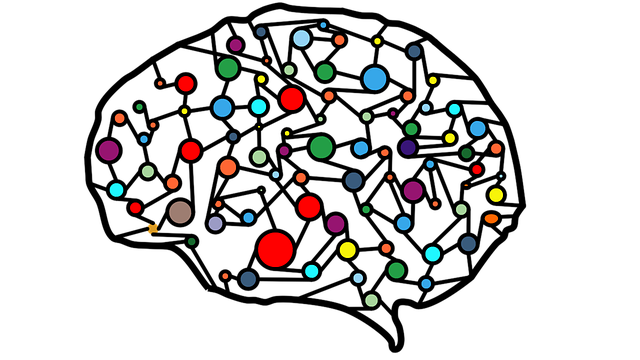

CS410 - Team Crystal - CrossFade
Welcome to our musical note transcription program! This software has been designed to identify and transcribe musical notes played by various instruments into sheet music.
With this program, you can easily convert any musical performance into a written musical notation, making it easier for you to analyze, edit, and share your musical creations.
Our software uses advanced algorithms to recognize and identify individual notes from a wide range of instruments, including pianos, guitars, flutes, and many others. It can also differentiate between different octaves and note durations to produce accurate and detailed sheet music.

Whether you are a musician looking to transcribe your own compositions or a music teacher looking to transcribe performances for your students, our program is the perfect solution. So why wait? Start transcribing your musical creations with our software today!